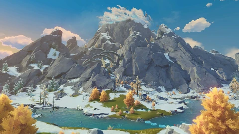

Mondstadt · Geography & Locations
Dragonspine
Dragonspine’s ruins preserve Sal Vindagnyr’s fall beneath the Skyfrost Nail; recent events have made the restored Nail active again and central to Mondstadt’s trial.

A mountain with several historical layers
Dragonspine is the frozen mountain south of Mondstadt. Its ruins hold the remains of Sal Vindagnyr, the settlement's Ancient Carvings and murals, and scattered objects that preserve different voices from its final days. The history is spread across exploration quests, item descriptions, weapon lore, and environmental records rather than delivered in one complete chronicle.
Those sources do not all have the same perspective. A carved record, the Princess's memory, and a later scholar's observation should be read as separate evidence. Taken together they establish the mountain's transformation and the end of its ancient settlement, while leaving some details of the Nail's purpose and the civilization's earlier history unsettled.
Sal Vindagnyr before the fall
The Ancient Carvings remember a people who left a land of snow and strife and came upon a verdant mountain. They built a settlement there and lived with traditions tied to the mountain's sacred tree and to heavenly envoys. The old name Sal Vindagnyr belongs to this lost civilization; Vindagnyr is also preserved in the modern name Peak of Vindagnyr.
The murals and objects recovered from the mountain add a priest, his daughter the Princess, a scribe, and an outlander named Imunlaukr to that record. They show that Sal Vindagnyr had leaders and religious traditions, but they do not provide a complete political history or an exact date for its founding.
The Skyfrost Nail and the changed mountain
The Skyfrost Nail fell over the summit and transformed the region's climate. Sal Vindagnyr's carvings and the Princess's account connect the disaster with the destruction of the sacred tree and the spreading ice and snow. The attempt to revive the tree by grafting a branch failed; a shard of the Nail later became embedded in the tree players know as the Frostbearing Tree.
The mountain's three boxes, Frostbearer, Snow-Tombed Starsilver, and the In the Mountains quest preserve related but incomplete accounts. Together they support the link between the Nail's fall, the tree's destruction, and the settlement's collapse. They do not establish the residents' exact final moments or answer every question about why the Nail was sent.
The Princess and Imunlaukr
The Princess's record and the Snow-Tombed Starsilver story describe her giving the outlander Imunlaukr a greatsword and sending him away with hope that he could find a way to save the people. The accounts place him outside Sal Vindagnyr during the catastrophe; when he returned, the settlement had fallen.
The texts leave the end of his mission open. Later traditions connect the name Imunlaukr with a Mondstadt clan, but that does not fill in every step between his departure and the clan's later history. The items establish his role in the Princess's plan without identifying exactly what he sought or what he learned.
In the Mountains and the restored Nail
In the Mountains sends the Traveler through Dragonspine's sealed paths and three frozen shards. After the shards are freed, the Skyfrost Nail rises above the Peak of Vindagnyr. This present-day quest confirms that the structure can be restored and still affects the mountain; it does not explain the Nail's full operating purpose.
The Frostbearing Tree's offering system is a separate part of the exploration story. The Tree receives Crimson Agate, while the In the Mountains quest concerns the Nail's frozen shards and its ascent. Keeping these related Dragonspine mechanics distinct avoids treating every red crystal or tree effect as one event.
The Nail becomes active again
In Version 7.1's The Anomaly, Albedo observes that the Skyfrost Nail has begun to glow and make sounds like the other Nails of Retribution. He says he had assumed its judgment was finished after it destroyed Sal Vindagnyr, but now recognizes that the situation is more complicated. He stays to observe how the change affects Dragonspine's ecosystem. The dialogue does not identify what caused the activity.
Version 7.2 identifies the Skyfrost Nail as one of the six Nails of Retribution and gives it a new role in the Archon Quest A Yesterday Sent From Beyond: it is Mondstadt's Trial of Usurpation site. Venti enters the Nail to answer a trial about freedom, drawing on the choices made by Mondstadt's people. The wider quest suspends the Hallowing after the nations complete their trials, but the Nails remain, and the story has not explained the Skyfrost Nail's next function.
What Dragonspine's record establishes
The game establishes that Sal Vindagnyr once occupied a green mountain, that the Skyfrost Nail changed the region into the frozen landscape players explore, and that the ancient settlement did not survive the fall. The restored Nail later rose above the mountain; in the current story it became active again and hosted Mondstadt's trial.
The causes behind the Nail's original judgment, the complete chronology of Sal Vindagnyr, the full purpose of the Nails, and the Skyfrost Nail's future state remain unresolved. Recent dialogue makes the Nails part of a wider present-day crisis, but it does not retroactively answer every mystery in the old Dragonspine records.
This is an original CoreGG reading guide, not an official HoYoverse article or a reproduction of the game text. Source links below identify the records used so you can check the original context.
Sources & references
Check these sources for the original game text and reference trail.